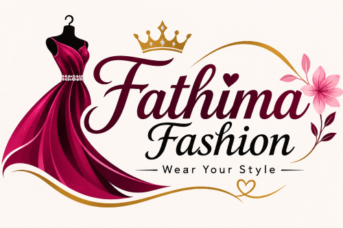

Projects & Creations
Explore my creative ideas, technical projects and practical learning experiences in technology.
01 • MACHINE LEARNING

Spam Email Classifier
A machine learning project focused on identifying spam emails and distinguishing them from genuine messages. This project explores how artificial intelligence can improve email security and detect unwanted messages.
02 • WEB DEVELOPMENT

Fathima Fashion Design
A creative fashion website developed as a web design practice project. It features attractive layouts, elegant styling, colour combinations and a user-friendly visual experience using HTML and CSS.
View Website →03 • ARTIFICIAL INTELLIGENCE

AI-Based Human Regret Prediction
An intelligent decision-support concept that helps users compare choices, evaluate possible risks, explore alternative outcomes and understand factors that may influence their decisions.